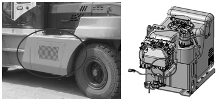

DEF/Ad-Blue Supply Module Filter Replacement  Loosen the supply module plug located on the inside of frame step (LH). Remove the filter element from the supply module. Insert a new filter element. Fasten with the supply module plug. For more details, refer to the “engine service manual” Parent topic: Every 4500 Service Hours or 36 Months